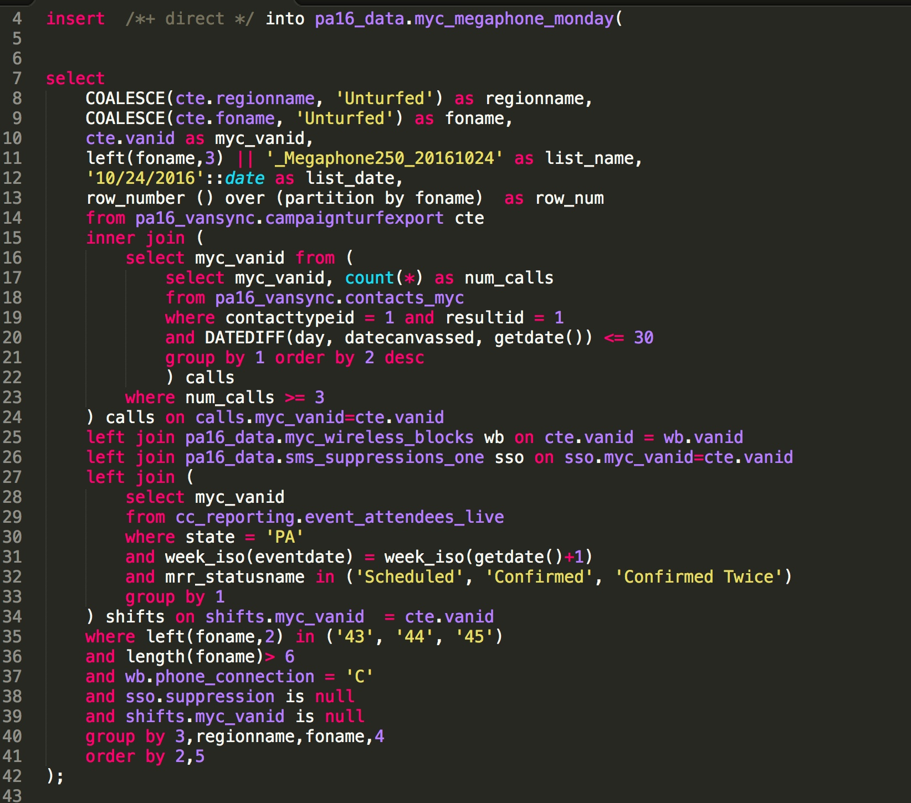

Goal: combine the informal and formal to make good things happen
The Big Picture
My philosophy:
ANYONE can learn to code!
Skills can be learned with a combination of practice, patience, and support. What's more interesting is using the tools in a practical way to solve problems
The problem with code
Or, where are all the pretty charts?

Core Themes:
Clear communication
Complex tasks on a short timeline
Multiple stakeholders involved
HFA:"Org 250" SMS
WHAT: create a system of automated queries to build SMS contact lists for every region to text 250+ current and potential volunteers
HFA:"Org 250" SMS
Build suppression list table
Create table of non-volunteers by region
Create table of volunteers w/o region, not called
Create table of volunteers w/o region, called but not scheduled
Load volunteer list to VAN
Load non-volunteer list to VAN
HFA: Weekly Deep Dive Deck
WHAT: create 80+ slide deck (and sometimes present) state-wide campaign stats for weekly 3-hour review with field leadership and senior staff
HFA: Weekly Deep Dive Deck
Tasks involved:
Verify reports are up-to-date
Coordinate team to pull reports for ever region
Format and include newest information
Prepare notes and takeaways for each region, whether presenting or not